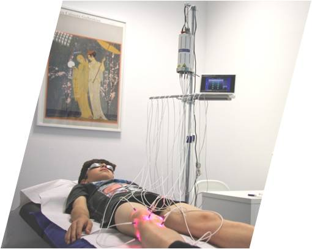
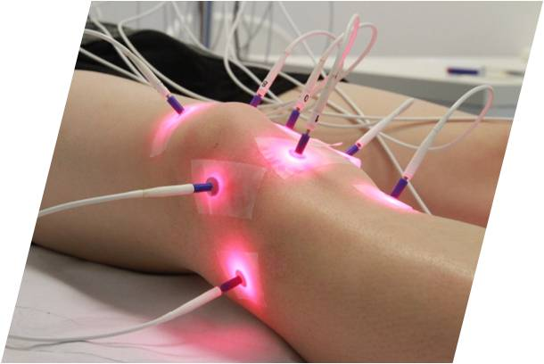

LASERTERAPIA
A laserterapia consiste na aplicação de um feixe laser de baixa potência numa ou varias zonas melhorando os processos de recuperação de lesões ósseas, músculo-esqueléticas ou dermatológicas assim como os transtornos nevrálgicos.
Por ser inócuo e ter um amplo espectro de aplicações, o laser terapêutico posiciona-se em várias especialidades clínicas das medicinas Moderna e Natural:
- Em Otorrinolaringologia: Sinusite de causa infeciosa ou alérgica, rinite, faringite, otite media...
- Em Ortopedia e Traumatologia: tendinite, entorses, cervicálgias, contraturas, fraturas...
- Em Estomatologia: gengivite, aftas bucais, abscessos...
- Em Dermatologia: herpes, acne inflamatório, micose superficial, dermatite ou eczemas...
- Em Medicina Tradicional Chinesa (laserpunctura): enxaquecas, asma, estresse, depressão, insónias, nevralgias...
- Outras variais especialidades.
A ALTMED – Clínica de Medicinas Alternativas, possui o LASERACUS que é um laser de última geração de baixa potência com agulhas HDE – High Excitiation Density ( Excitação de Alta Densidade), só estres instrumentos conseguem a energia necessária para a ativação do metabolismo celular dos chondrocyts e osteoblastos primários.
- Fiável e seguro, fácil de utilizar e transportar;
- Completamente indolor e sem efeitos secundários;
- Estimulação até 10 pontos de acupunctura em simultâneo;
- Totalmente automático, dispõe de tratamentos - frequências pré programados como as frequências de Nogier, Bahr, Reininger, Chackra e Tons.
- Frequências programáveis: todos os parâmetros são controlados através de um computador portátil (notebook). O terapeuta pode personalizar o tratamento com frequências adaptadas a cada paciente.